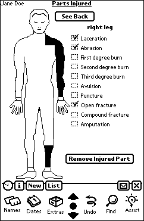

One of the pieces of data that emergency personnel must collect at accident scene is the site and type of injury the patient has sustained. Standard paper forms generally provide a simple column of checkboxes such as “Right leg” or “Left arm” for indicating the injury’s location and a corresponding list of possible conditions, like “Laceration” or “Open fracture.” The obvious limitation of this system is that it does not easily scale to handle multiple injuries, forcing EMS teams to list them by hand in a comments section.
To the right is an early version of the Parts Injured screen in SirenPro. We replaced the list of location checkboxes with an outline of a human body. Tapping on a body part turns it black and brings up a list of possible injuries. Tapping on a second body part highlights it as well and brings up another list, which is distinct from the first.
